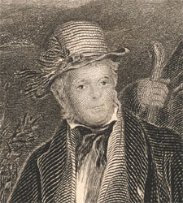
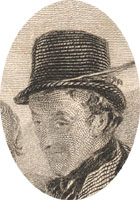

|
|
|||||
|
|
Home | Corson Collection | Biography | Works | Image Collection | Recent Publications | Correspondence | Forthcoming Events | Links | E-texts | Contact The Abbotsford Family (1817)Sir David Wilkie first met Scott in London in 1809 when both dined with the publisher John Murray. He found the writer 'most interesting in conversation' and 'very communicative of the all but universal knowledge he has acquired'. Their paths did not however cross again until October 1817 when Wilkie was invited to Abbotsford during a visit to Scotland. Here he was commissioned by Scott's friend Sir Adam Fergusson to paint the group composition that was to become The Abbotsford Family. He began work immediately, making rapid progress on the picture during the fortnight that he spent as a guest of Scott. The portraits of Lady Scott, Scott's daughters Sophia and Anne, son's Walter and Charles, friend Sir Adam Fergusson, and shepherd Thomas Scott are all taken from life. Scott himself provided Wilkie with a dilemma. He was loath to trouble Scott to sit for a portrait as he knew him to be hard at work on Rob Roy. After several days, however, he perceived that Scott 'always had time for less important purposes' and conquered his scruples. The painting was displayed in the 1818 exhibition at the Royal Academy, but there is evidence that the artist worked upon it subsequently, retouching in particular the portrait of Lady Scott which her husband did not judge to be a good likeness.
Scott later described the painting in a letter to Fergusson of 7 March 1827:
Scott himself (see detail below) is portrayed at full-length, wearing a slate-blue coat, cerise waistcoat, white shirt, black stock, and buff trousers and hat, the costume which, according to a review in Blackwood's Magazine was his customary attire when inspecting his estate. The painting is 10¾ by 14½ inches.  The Scott family appear to have been highly pleased by the painting. Scott wrote to Wilkie that 'I cannot tell you how acceptable the picture has been to all who have seen and how much the relatives of the party honoured (not always easily gratified you know) are delighted with your having commemorated them' (letter of 23 January 1818, Letters, V, 93). Likewise, in a letter to Lady Compton, he referred to is 'a very good picture' by 'this modest and most promising artist' which is 'prodigiously admired by Scotch amateurs at least as a piece of art'. Critical reaction has been rather more mixed. For Blackwood's Magazine the portrait might have lacked 'the fine poetical tone' of Sir Henry Raeburn's 1808 portrait, but 'we have seen no painting which places the individual, in his every-day feelings, so completely before the spectator'. The Monthly Magazine, conversely, condemned it as 'a most conceited design' which 'creates pity for the painter and disgust at the objects, while it violates decency and good taste'. Scott's son-in-law Lockhart regretted that he could not 'express much approbation of the representation of Sir Walter, introduced by Sir David Wilkie in his picture of "The Abbotsford Family;'' nor indeed are any of the likenesses in that beautiful piece (1817) at all satisfactory to me, except only that of Sir Adam Fergusson [see detail right], which is perfect' (Life, X, 263). A more recent biographer, Dame Una Pope-Hennessy thought it 'a wax-like arrangement of expressionless little dummies' to be dismissed as 'a kind of joke' (Quarterly Review, 259 (1932), 82). The Abbotsford Family remained in the Fergusson family until 1895 when it was sold to the Scottish National Portrait Gallery. It was engraved on four occasions: by W.H. Worthington (1828), Robert Graves (1837), John Smith (1847), and William Greatbach (184-?). Click on the links below to see images of the engravings held by Edinburgh University Library: The full letter to Sir Adam Fergusson descriptive of the painting was published in The Bijou, 1828, along with the engraving by W.H. Worthington. Both may be viewed at the Romantic Anthologies Web Site. Bibliography
Last updated: 3-June-2005
|
||||